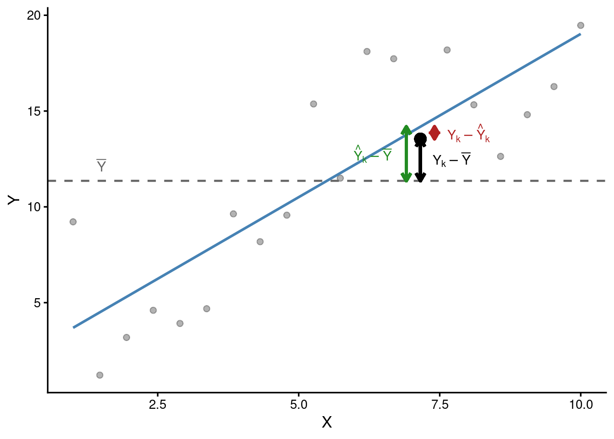
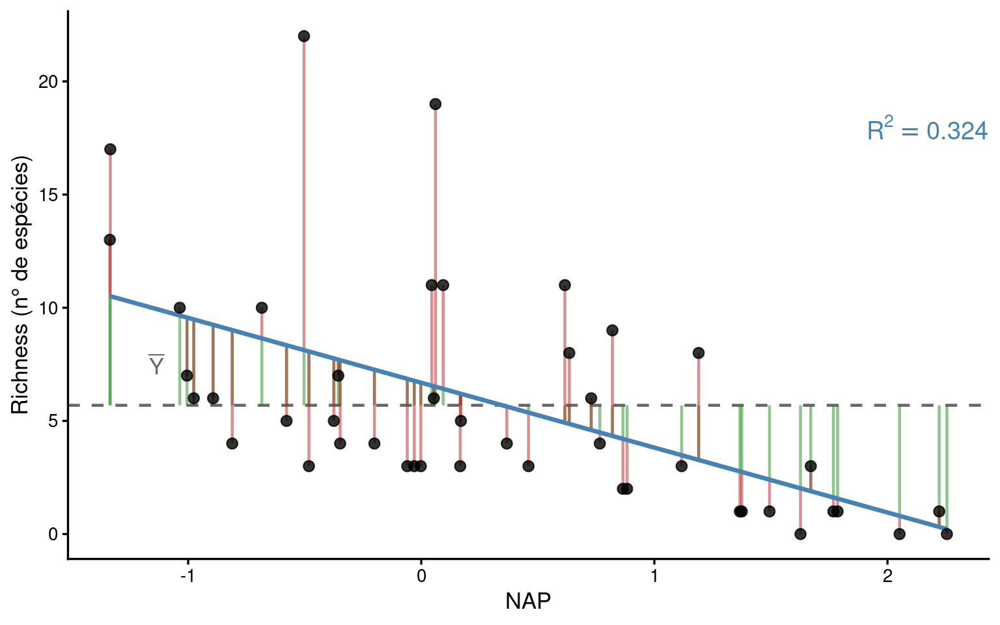

library(tidyverse)
library(patchwork)
library(gt)
library(knitr)Partição da soma dos quadrados e coeficiente de determinação na regressão linear
Regressão linear
Estatística
Soma dos quadrados
Coeficiente de determinação
Decomposição algébrica e geométrica da variabilidade total em componentes da regressão e do resíduo. Derivação e interpretação do coeficiente de determinação R².
DicaPacotes e funções utilizadas no capítulo
Ao ajustar um modelo de regressão linear simples, obtemos a reta que minimiza a soma dos quadrados dos resíduos (\(SQ_{Res}\)). No entanto, um aspecto fundamental que ainda não foi explorado em profundidade é: qual a proporção da variação total em \(Y\) que o modelo é capaz de explicar? Para responder a esta pergunta, precisamos decompor a variação total de \(Y\) em duas parcelas distintas: uma atribuída à regressão e outra atribuída aos resíduos. Este processo é conhecido como partição da soma dos quadrados e culmina no cálculo do coeficiente de determinação \(R^2\).
Recordando o modelo de regressão linear simples:
\[Y_i = \hat{\beta}_0 + \hat{\beta}_1 X_i + e_i\]
onde \(\hat{Y}_i = \hat{\beta}_0 + \hat{\beta}_1 X_i\) é o valor ajustado e \(e_i = Y_i - \hat{Y}_i\) é o resíduo da \(i\)-ésima observação.
1 As três componentes da variação
Consideremos \(n\) pares de observações \((X_i, Y_i)\) com \(i = 1, \ldots, n\). Definimos três quantidades fundamentais.
Soma dos Quadrados Total (\(SQ_{Total}\)): mede a variação total de \(Y\) em torno de sua média \(\bar{Y}\), independentemente do modelo de regressão.
\[SQ_{Total} = \sum_{i=1}^{n}(Y_i - \bar{Y})^2\]
Soma dos Quadrados da Regressão (\(SQ_{Reg}\)): mede a variação nos valores ajustados \(\hat{Y}_i\) em torno de \(\bar{Y}\). Representa a parcela da variação total que é explicada pela variável preditora \(X\).
\[SQ_{Reg} = \sum_{i=1}^{n}(\hat{Y}_i - \bar{Y})^2\]
Soma dos Quadrados dos Resíduos (\(SQ_{Res}\)): mede a variação dos valores observados em torno dos valores ajustados. Representa a parcela da variação total que não é explicada pelo modelo, atribuída ao erro.
\[SQ_{Res} = \sum_{i=1}^{n}(Y_i - \hat{Y}_i)^2\]
NotaAs três somas dos quadrados
| Componente | Expressão | Interpretação |
|---|---|---|
| \(SQ_{Total}\) | \(\sum (Y_i - \bar{Y})^2\) | Variação total em \(Y\) |
| \(SQ_{Reg}\) | \(\sum (\hat{Y}_i - \bar{Y})^2\) | Variação explicada pelo modelo |
| \(SQ_{Res}\) | \(\sum (Y_i - \hat{Y}_i)^2\) | Variação não explicada (resíduo) |
A figura abaixo ilustra os três desvios para uma observação qualquer \((X_k, Y_k)\).

A linha tracejada horizontal representa \(\bar{Y}\). Para o ponto destacado, podemos observar:
- O desvio total (\(Y_k - \bar{Y}\), em preto) é a soma do desvio da regressão e do resíduo.
- O desvio da regressão (\(\hat{Y}_k - \bar{Y}\), em verde) é a porção do desvio total capturada pelo modelo.
- O resíduo (\(Y_k - \hat{Y}_k\), em vermelho) é o que sobra após o ajuste.
2 Derivação algébrica da partição
A propriedade aditiva \(SQ_{Total} = SQ_{Reg} + SQ_{Res}\) não é óbvia. Vamos demonstrá-la rigorosamente.
2.1 A identidade fundamental
O ponto de partida é a seguinte decomposição do desvio de cada observação em relação à média:
\[Y_i - \bar{Y} = (\hat{Y}_i - \bar{Y}) + (Y_i - \hat{Y}_i)\]
Esta identidade é sempre exata: o desvio total se decompõe na soma do desvio da regressão com o resíduo. Ao elevarmos ambos os lados ao quadrado:
\[(Y_i - \bar{Y})^2 = \left[(\hat{Y}_i - \bar{Y}) + (Y_i - \hat{Y}_i)\right]^2\]
Expandindo o lado direito:
\[(Y_i - \bar{Y})^2 = (\hat{Y}_i - \bar{Y})^2 + (Y_i - \hat{Y}_i)^2 + 2(\hat{Y}_i - \bar{Y})(Y_i - \hat{Y}_i)\]
Somando sobre todas as \(n\) observações:
\[\sum_{i=1}^{n}(Y_i - \bar{Y})^2 = \sum_{i=1}^{n}(\hat{Y}_i - \bar{Y})^2 + \sum_{i=1}^{n}(Y_i - \hat{Y}_i)^2 + 2\sum_{i=1}^{n}(\hat{Y}_i - \bar{Y})(Y_i - \hat{Y}_i)\]
Ou seja:
\[SQ_{Total} = SQ_{Reg} + SQ_{Res} + 2 \underbrace{\sum_{i=1}^{n}(\hat{Y}_i - \bar{Y})\, e_i}_{\text{produto cruzado}}\]
Para que a partição valha, é necessário que o produto cruzado seja nulo.
2.2 Anulação do produto cruzado
Denotando o resíduo por \(e_i = Y_i - \hat{Y}_i\), precisamos mostrar que:
\[\sum_{i=1}^{n}(\hat{Y}_i - \bar{Y})\, e_i = 0\]
Como a reta de regressão passa pelo ponto \((\bar{X}, \bar{Y})\), temos \(\bar{Y} = \hat{\beta}_0 + \hat{\beta}_1 \bar{X}\). Portanto:
\[\hat{Y}_i - \bar{Y} = (\hat{\beta}_0 + \hat{\beta}_1 X_i) - (\hat{\beta}_0 + \hat{\beta}_1 \bar{X}) = \hat{\beta}_1(X_i - \bar{X})\]
Substituindo:
\[\sum_{i=1}^{n}(\hat{Y}_i - \bar{Y})\, e_i = \hat{\beta}_1 \sum_{i=1}^{n}(X_i - \bar{X})\, e_i\]
Expandindo \((X_i - \bar{X}) = X_i - \bar{X}\):
\[\sum_{i=1}^{n}(X_i - \bar{X})\, e_i = \sum_{i=1}^{n} X_i\, e_i - \bar{X}\sum_{i=1}^{n} e_i\]
As condições de mínimos quadrados (equações normais do MMQ) garantem que:
- \(\displaystyle\sum_{i=1}^{n} e_i = 0\) — a soma dos resíduos é zero.
- \(\displaystyle\sum_{i=1}^{n} X_i\, e_i = 0\) — os resíduos são não correlacionados com \(X\).
Portanto:
\[\sum_{i=1}^{n}(X_i - \bar{X})\, e_i = 0 - \bar{X} \cdot 0 = 0\]
e consequentemente o produto cruzado é nulo. Isto demonstra a identidade:
NotaPartição da soma dos quadrados na regressão linear
\[SQ_{Total} = SQ_{Reg} + SQ_{Res}\]
\[\sum_{i=1}^{n}(Y_i - \bar{Y})^2 = \sum_{i=1}^{n}(\hat{Y}_i - \bar{Y})^2 + \sum_{i=1}^{n}(Y_i - \hat{Y}_i)^2\]
2.3 O argumento de ortogonalidade
A nulidade do produto cruzado possui uma interpretação geométrica elegante. Podemos representar as \(n\) observações como vetores em \(\mathbb{R}^n\). Nesta perspectiva:
- O vetor \(\hat{\mathbf{Y}} - \bar{Y}\mathbf{1}\) (desvios dos valores ajustados) pertence ao espaço coluna da matriz do modelo \(\mathbf{X}\).
- O vetor \(\mathbf{e} = \mathbf{Y} - \hat{\mathbf{Y}}\) (resíduos) é ortogonal ao espaço coluna de \(\mathbf{X}\), pois as condições de mínimos quadrados garantem exatamente esta propriedade.
A projeção \(\hat{\mathbf{Y}}\) é a projeção ortogonal de \(\mathbf{Y}\) sobre o espaço coluna de \(\mathbf{X}\). A ortogonalidade entre \(\hat{\mathbf{Y}} - \bar{Y}\mathbf{1}\) e \(\mathbf{e}\) é análoga ao teorema de Pitágoras: o quadrado da hipotenusa (desvio total) é igual à soma dos quadrados dos catetos (desvio da regressão e resíduo). Assim, \(SQ_{Total} = SQ_{Reg} + SQ_{Res}\) é simplesmente o teorema de Pitágoras no espaço \(\mathbb{R}^n\).
3 O coeficiente de determinação \(R^2\)
3.1 Definição e interpretação
A partição da soma dos quadrados nos permite definir o coeficiente de determinação \(R^2\) como a proporção da variação total em \(Y\) que é explicada pelo modelo de regressão:
NotaCoeficiente de determinação
\[R^2 = \frac{SQ_{Reg}}{SQ_{Total}} = 1 - \frac{SQ_{Res}}{SQ_{Total}}\]
Como \(0 \le SQ_{Reg} \le SQ_{Total}\), temos \(0 \le R^2 \le 1\).
- \(R^2 = 0\): o modelo não explica nenhuma variação em \(Y\); a reta ajustada é horizontal (\(\hat{\beta}_1 = 0\)) e \(SQ_{Reg} = 0\).
- \(R^2 = 1\): o modelo explica toda a variação em \(Y\); todos os pontos estão exatamente sobre a reta de regressão e \(SQ_{Res} = 0\).
- \(0 < R^2 < 1\): situação usual, em que o modelo explica uma fração \(R^2 \times 100\%\) da variação total.
3.2 Formulações alternativas
\(SQ_{Reg}\) pode ser expresso em termos dos coeficientes do modelo e dos somatórios dos quadrados. Como \(\hat{Y}_i - \bar{Y} = \hat{\beta}_1(X_i - \bar{X})\):
\[SQ_{Reg} = \sum_{i=1}^{n}(\hat{Y}_i - \bar{Y})^2 = \hat{\beta}_1^2 \sum_{i=1}^{n}(X_i - \bar{X})^2 = \hat{\beta}_1^2 \cdot SQ_X\]
Substituindo \(\hat{\beta}_1 = SQ_{XY}/SQ_X\):
\[SQ_{Reg} = \frac{SQ_{XY}^2}{SQ_X^2} \cdot SQ_X = \frac{SQ_{XY}^2}{SQ_X} = \hat{\beta}_1 \cdot SQ_{XY}\]
onde \(SQ_{XY} = \sum(X_i - \bar{X})(Y_i - \bar{Y})\) é o produto cruzado de \(X\) e \(Y\), e \(SQ_X = \sum(X_i - \bar{X})^2\).
3.3 Relação com o coeficiente de correlação
Na regressão linear simples, \(R^2\) é exatamente igual ao quadrado do coeficiente de correlação de Pearson \(r\):
\[R^2 = r^2\]
Demonstração. Partindo de \(R^2 = SQ_{Reg}/SQ_{Total} = SQ_{XY}^2 / (SQ_X \cdot SQ_Y)\):
\[R^2 = \frac{SQ_{XY}^2}{SQ_X \cdot SQ_Y} = \left(\frac{SQ_{XY}}{\sqrt{SQ_X \cdot SQ_Y}}\right)^2 = r^2 \quad \blacksquare\]
Esta relação é exclusiva da regressão simples. Na regressão múltipla, \(R^2\) generaliza o conceito de correlação, mas não é simplesmente o quadrado de uma correlação bivariada.
3.4 Limitações do \(R^2\)
Embora \(R^2\) seja uma medida de ajuste amplamente utilizada, é importante reconhecer suas limitações:
\(R^2\) não mede causalidade. Uma associação forte entre \(Y\) e \(X\) não implica que \(X\) cause \(Y\). Uma terceira variável pode ser responsável pela associação observada.
\(R^2\) depende da amplitude de \(X\). Ampliar o intervalo dos valores de \(X\) tende a aumentar \(SQ_{Reg}\) e, consequentemente, \(R^2\), mesmo que a dispersão ao redor da reta não mude.
\(R^2\) alto não garante bom ajuste. Um modelo pode ter \(R^2\) elevado e ainda apresentar padrões sistemáticos nos resíduos, indicando violação de suposições do modelo.
\(R^2\) baixo não invalida o modelo. Em muitas aplicações nas ciências biológicas e sociais, \(R^2\) moderados (0,3–0,5) já refletem relações substantivas e interpretáveis.
\(R^2\) não é comparável entre conjuntos de dados. Dois modelos com \(R^2\) iguais em datasets diferentes não têm necessariamente a mesma qualidade de ajuste.
4 Situações extremas
Para compreender melhor o significado de \(R^2\), vamos simular dois cenários contrastantes: um com \(R^2\) elevado e outro com \(R^2\) baixo.
set.seed(42)
n_sim <- 60
X_sim <- seq(1, 10, length.out = n_sim)
# Cenário 1: R² alto (dispersão pequena em torno da reta)
Y_alto <- 5 + 3 * X_sim + rnorm(n_sim, sd = 1.5)
# Cenário 2: R² baixo (dispersão grande em torno da reta)
Y_baixo <- 5 + 3 * X_sim + rnorm(n_sim, sd = 12)4.1 Cenário com \(R^2\) elevado
df_alto <- data.frame(X = X_sim, Y = Y_alto)
mod_alto <- lm(Y ~ X, data = df_alto)
# Cálculo manual das somas dos quadrados
Ybar_alto <- mean(Y_alto)
Yfit_alto <- fitted(mod_alto)
SQTotal_alto <- sum((Y_alto - Ybar_alto)^2)
SQReg_alto <- sum((Yfit_alto - Ybar_alto)^2)
SQRes_alto <- sum((Y_alto - Yfit_alto)^2)
# Verificação: SQTotal = SQReg + SQRes
cat("SQTotal:", round(SQTotal_alto, 2), "\n")SQTotal: 3719.5 cat("SQReg + SQRes:", round(SQReg_alto + SQRes_alto, 2), "\n")SQReg + SQRes: 3719.5 # R² manual
R2_alto_manual <- SQReg_alto / SQTotal_alto
cat("R² (manual):", round(R2_alto_manual, 4), "\n")R² (manual): 0.9536 # R² pela função summary
cat("R² (summary):", round(summary(mod_alto)$r.squared, 4), "\n")R² (summary): 0.9536 4.2 Cenário com \(R^2\) baixo
df_baixo <- data.frame(X = X_sim, Y = Y_baixo)
mod_baixo <- lm(Y ~ X, data = df_baixo)
# Cálculo manual
Ybar_baixo <- mean(Y_baixo)
Yfit_baixo <- fitted(mod_baixo)
SQTotal_baixo <- sum((Y_baixo - Ybar_baixo)^2)
SQReg_baixo <- sum((Yfit_baixo - Ybar_baixo)^2)
SQRes_baixo <- sum((Y_baixo - Yfit_baixo)^2)
cat("SQTotal:", round(SQTotal_baixo, 2), "\n")SQTotal: 9305.3 cat("SQReg + SQRes:", round(SQReg_baixo + SQRes_baixo, 2), "\n")SQReg + SQRes: 9305.3 R2_baixo_manual <- SQReg_baixo / SQTotal_baixo
cat("R² (manual):", round(R2_baixo_manual, 4), "\n")R² (manual): 0.2547 cat("R² (summary):", round(summary(mod_baixo)$r.squared, 4), "\n")R² (summary): 0.2547 4.3 Visualização dos dois cenários

Em ambos os cenários a reta de regressão tem a mesma inclinação verdadeira (\(\beta_1 = 3\)). A diferença está na variância residual: à esquerda, os pontos se concentram em torno da reta (\(R^2 = 0.954\)); à direita, a dispersão é muito maior e a regressão explica uma fração pequena da variação total (\(R^2 = 0.255\)).
A figura confirma ainda que a identidade \(SQ_{Total} = SQ_{Reg} + SQ_{Res}\) é verificada numericamente em ambos os casos, com o mesmo \(SQ_{Reg}\) nos dois cenários — o que difere é o \(SQ_{Res}\) e, consequentemente, o \(SQ_{Total}\).
5 Exemplo aplicado: dados RIKZ
Vamos aplicar todos os conceitos ao conjunto de dados RIKZ, que contém medidas de riqueza de macro-fauna praial (número de espécies) e o índice de exposição às ondas (NAP) coletados em \(45\) amostras ao longo da costa da Holanda (Zuur et al. 2009).
rikz <- read_csv('https://raw.githubusercontent.com/FCopf/datasets/refs/heads/main/RIKZ.csv')5.1 Ajuste do modelo
mod_rikz <- lm(Richness ~ NAP, data = rikz)O modelo ajustado é:
\[\widehat{Richness} = 6.686 + (-2.867) \times NAP\]
5.2 Cálculo manual das somas dos quadrados
n_rk <- nrow(rikz)
Ybar_rk <- mean(rikz$Richness)
Yfit_rk <- fitted(mod_rikz)
Yres_rk <- residuals(mod_rikz)
SQTotal_rk <- sum((rikz$Richness - Ybar_rk)^2)
SQReg_rk <- sum((Yfit_rk - Ybar_rk)^2)
SQRes_rk <- sum(Yres_rk^2)
cat("SQTotal:", round(SQTotal_rk, 3), "\n")SQTotal: 1101.644 cat("SQReg: ", round(SQReg_rk, 3), "\n")SQReg: 357.529 cat("SQRes: ", round(SQRes_rk, 3), "\n")SQRes: 744.115 cat("Verificação (SQReg + SQRes):", round(SQReg_rk + SQRes_rk, 3), "\n")Verificação (SQReg + SQRes): 1101.644 A tabela abaixo apresenta os primeiros valores da decomposição para cada observação:
Código
rikz |>
mutate(
Yfit = Yfit_rk,
Yres = Yres_rk,
dev_total = Richness - Ybar_rk,
dev_reg = Yfit_rk - Ybar_rk,
dev_res = Yres_rk
) |>
select(Richness, NAP, Yfit, dev_total, dev_reg, dev_res) |>
round(3) |>
slice_head(n = 10) |>
gt() |>
cols_label(
Richness = "Richness",
NAP = "NAP",
Yfit = html("Ŷ̂<sub>i</sub>"),
dev_total = html("Y<sub>i</sub> - Ā"),
dev_reg = html("Ŷ̂<sub>i</sub> - Ā"),
dev_res = html("Y<sub>i</sub> - Ŷ̂<sub>i</sub>")
) |>
fmt_number(decimals = 3)| Richness | NAP | Ŷ̂i | Yi - Ā | Ŷ̂i - Ā | Yi - Ŷ̂i |
|---|---|---|---|---|---|
| 11.000 | 0.045 | 6.557 | 5.311 | 0.868 | 4.443 |
| 10.000 | −1.036 | 9.656 | 4.311 | 3.967 | 0.344 |
| 13.000 | −1.336 | 10.516 | 7.311 | 4.827 | 2.484 |
| 11.000 | 0.616 | 4.920 | 5.311 | −0.769 | 6.080 |
| 10.000 | −0.684 | 8.647 | 4.311 | 2.958 | 1.353 |
| 8.000 | 1.190 | 3.274 | 2.311 | −2.415 | 4.726 |
| 9.000 | 0.820 | 4.335 | 3.311 | −1.354 | 4.665 |
| 8.000 | 0.635 | 4.865 | 2.311 | −0.824 | 3.135 |
| 19.000 | 0.061 | 6.511 | 13.311 | 0.822 | 12.489 |
| 17.000 | −1.334 | 10.510 | 11.311 | 4.821 | 6.490 |
5.3 Verificação com funções do R
As somas dos quadrados podem ser extraídas diretamente da tabela ANOVA da regressão:
anova(mod_rikz)Analysis of Variance Table
Response: Richness
Df Sum Sq Mean Sq F value Pr(>F)
NAP 1 357.53 357.53 20.66 4.418e-05 ***
Residuals 43 744.12 17.31
---
Signif. codes: 0 '***' 0.001 '**' 0.01 '*' 0.05 '.' 0.1 ' ' 1A primeira linha (NAP) corresponde a \(SQ_{Reg} = 357.53\) e a segunda linha (Residuals) a \(SQ_{Res} = 744.12\). Confirmamos que estes valores coincidem com os calculados manualmente.
O coeficiente de determinação \(R^2\) pode ser obtido tanto manualmente quanto pela função summary:
# R² manual
R2_rk_manual <- SQReg_rk / SQTotal_rk
cat("R² (manual):", round(R2_rk_manual, 4), "\n")R² (manual): 0.3245 # R² pela função summary
R2_rk_func <- summary(mod_rikz)$r.squared
cat("R² (summary):", round(R2_rk_func, 4), "\n")R² (summary): 0.3245 # Relação com o coeficiente de correlação de Pearson
r_rk <- cor(rikz$Richness, rikz$NAP)
cat("r² (Pearson):", round(r_rk^2, 4), "\n")r² (Pearson): 0.3245 Os três valores são idênticos, confirmando a relação \(R^2 = r^2\) na regressão simples.
5.4 Interpretação
O modelo de regressão linear \(Richness \sim NAP\) explica 32.5% da variação total na riqueza de espécies (\(R^2 = 0.3245\)). Em termos das somas dos quadrados:
\[SQ_{Total} = SQ_{Reg} + SQ_{Res}\] \[1101.6 = 357.5 + 744.1\]
Os 67.6% restantes da variação não são explicados pelo NAP e estão atribuídos ao resíduo — podem refletir a influência de outras variáveis ambientais, variação natural entre espécies ou erros de medição.
5.5 Visualização da partição
Código
df_rikz_plot <- rikz |>
mutate(Yfit = Yfit_rk,
Ybar = Ybar_rk)
ggplot(df_rikz_plot, aes(x = NAP, y = Richness)) +
geom_hline(yintercept = Ybar_rk, linetype = "dashed",
color = "gray40", linewidth = 0.8) +
# Desvios da regressão (verde): Ybar -> Yfit
geom_segment(aes(xend = NAP, y = Ybar, yend = Yfit),
color = "forestgreen", alpha = 0.5, linewidth = 0.8) +
# Resíduos (vermelho): Yfit -> Y
geom_segment(aes(xend = NAP, y = Yfit, yend = Richness),
color = "firebrick", alpha = 0.5, linewidth = 0.8) +
geom_smooth(method = "lm", se = FALSE, color = "steelblue", linewidth = 1.2) +
geom_point(size = 2.5, alpha = 0.8) +
annotate("text", x = min(rikz$NAP) + 0.2, y = Ybar_rk + 1.8,
label = expression(bar(Y)), size = 4.5, color = "gray40") +
annotate("text", x = 2.2, y = 18,
label = as.expression(bquote(R^2 == .(R2_rk))),
size = 5, color = "steelblue") +
labs(x = "NAP", y = "Richness (n° de espécies)") +
theme_classic(base_size = 13)

Na Figura 1, os segmentos verdes representam os desvios de \(\hat{Y}_i\) em relação a \(\bar{Y}\) (\(SQ_{Reg}\)) e os segmentos vermelhos representam os resíduos \(e_i = Y_i - \hat{Y}_i\) (\(SQ_{Res}\)). A soma dos quadrados de todos os segmentos verdes mais a soma dos quadrados de todos os segmentos vermelhos é igual à soma dos quadrados de todos os desvios totais (\(SQ_{Total}\)).
Referências
Zuur, Alain, Elena N Ieno, Neil Walker, Anatoly A Saveliev, e Graham M Smith. 2009. Mixed effects models and extensions in ecology with R. Springer Science & Business Media.